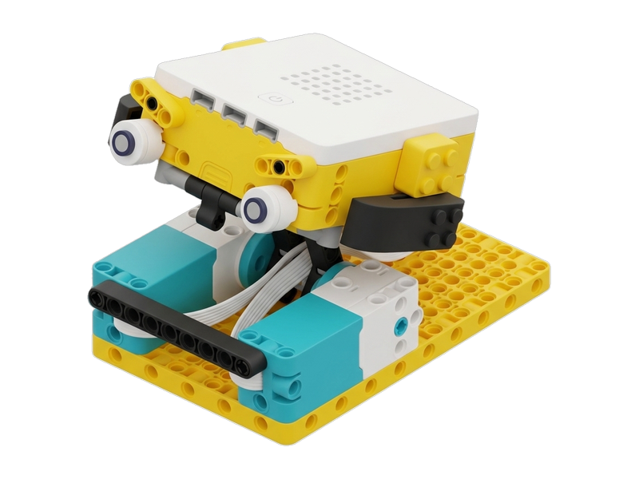
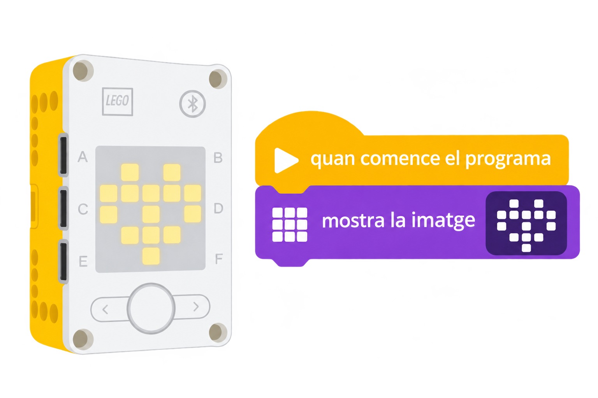
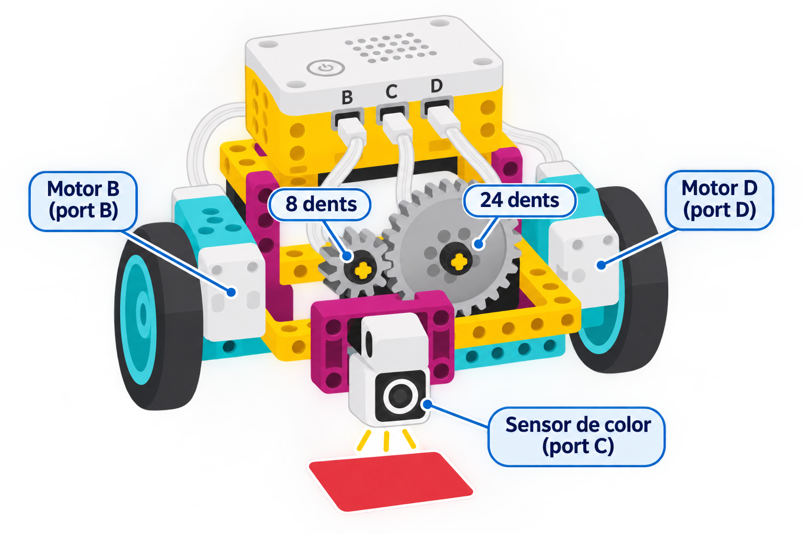
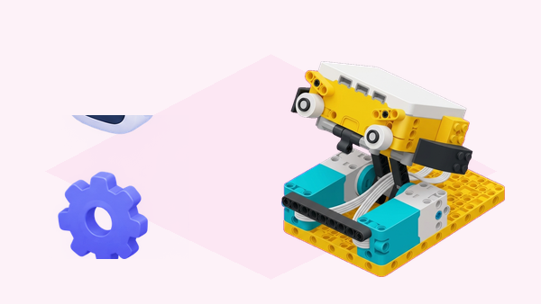
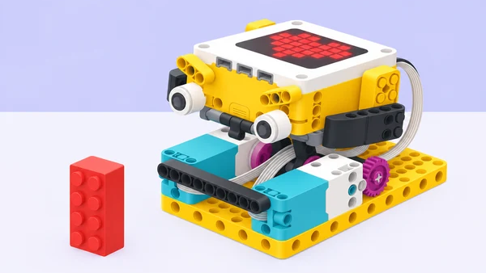
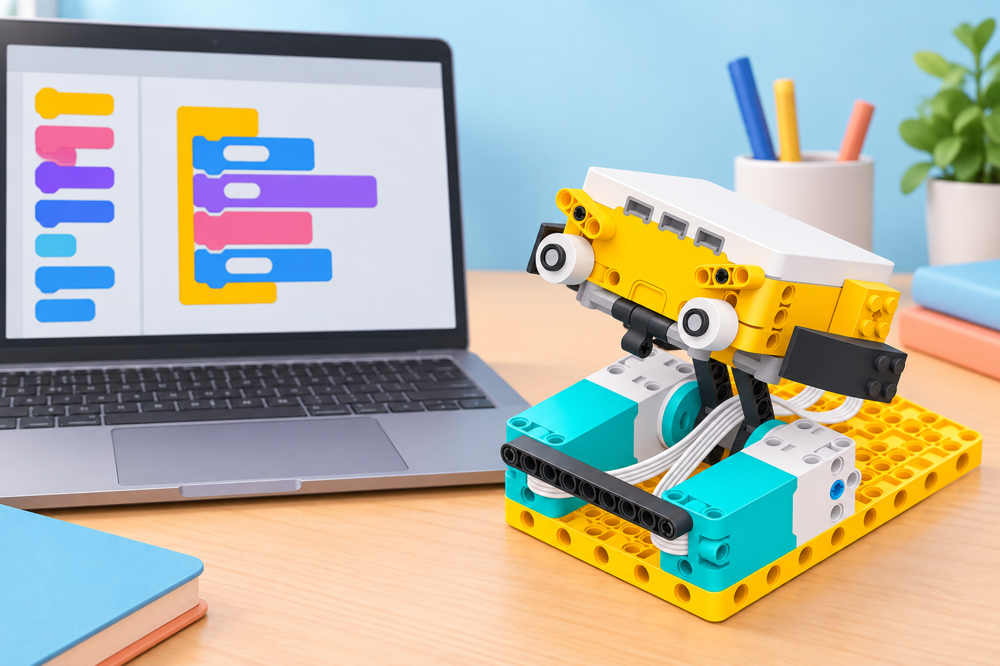

Spike
Mecatrònica, engranatges i sensors d'alta precisió de LEGO Education

LEGO Education SPIKE Prime és un conjunt de construcció STEAM per a primària avançada i secundària. El hub gran té 6 ports; el conjunt Prime inclou motors angulars i sensors de distància, color i força. SPIKE Essential té maquinari i accessoris diferents: adapta la proposta al conjunt que hi ha al centre.
Tutorials de Spike
Tutorials per iniciar-se en les possibilitats del robot, connectar-lo i utilitzar-ne els components.

Primeres passes: El Hub intel·ligent i el primer programa
Connectar el Hub SPIKE Prime, explorar la matriu 5 × 5, els sis ports i el sensor d’orientació.

Motors i sensors: Tren d'engranatges i sensor de color
Muntar un vehicle amb reductora d'engranatges per guanyar força i aturar-lo exactament davant d'una

Braç robòtic i sensor de força
Construir una pinça que detecti el contacte i utilitzar les lectures del sensor de força per provar

SPIKE Prime: calcular una parada sense tocar l’obstacle
Ajustar el recorregut d’una base motriu amb girs de roda i comparar el càlcul amb una parada per contacte.

SPIKE Prime: sensor de distància, giroscopi i avisador
Programar una parada basada en ultrasons, mesurar un gir amb el giroscopi i fer sonar l’altaveu del Hub.

SPIKE Prime: del programa de blocs a Python
Canviar a l’editor Python de MicroPython, controlar un motor angular i depurar una instrucció modificant un valor cada vegada.
Recursos oficials del fabricant
Materials, compatibilitat i instruccions actualitzades.
- Competition Ready (SPIKE Prime)Unitat de missions, moviment controlat, sensors i disseny iteratiu.
- SPIKE Prime Activity BriefsReptes oberts en què hi ha diverses solucions possibles.
Estat i disponibilitat del kit: LEGO Education ha anunciat la retirada comercial de SPIKE Essential i SPIKE Prime a partir Informació de LEGO Education